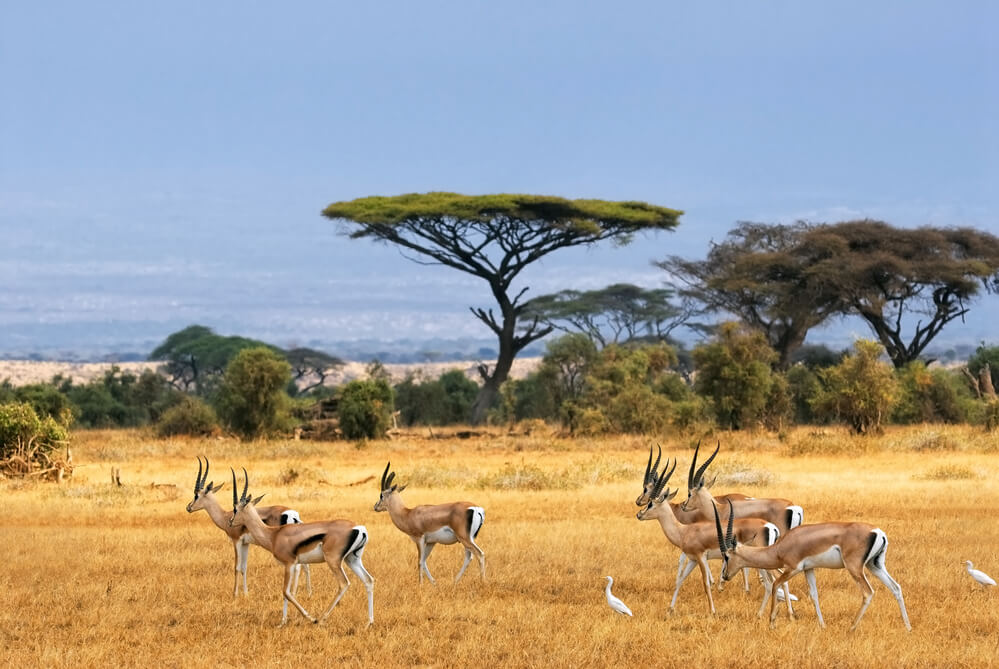

O continente africano é formado por 54 países, distribuídos em cinco regiões (África Setentrional, África Meridional, África Central, África Ocidental e África Oriental). Além dos países, o continente também abrange territórios não reconhecidos, como a Somalilândia e a República Árabe Saharaui Democrática. Os povos que habitam esses países hoje ultrapassam a marca de um bilhão de habitantes, distribuídos em uma área de aproximadamente 30 milhões de km2.
Considerada o berço da humanidade – teses indicam que o gênero homo tenha surgido no continente africano há mais de 2 milhões de anos – a África em sua história recente vive inúmeros conflitos políticos e uma grave crise social e econômica. O continente africano possui uma das maiores diversidades culturais do planeta. Na chamada África Branca, ao norte, predominam os povos caucasóides e semitas e na chamada África Negra, ao sul do Deserto do Saara, encontram-se os povos pigmeus, bosquímanos, hotentotes, sudaneses e os bantos. Esta diversidade por sua vez, se reflete nas mais de mil línguas diferentes que existem no continente africano, sem contar os inúmeros dialetos. Em algumas regiões inclusive, fala-se o português com algumas influências locais, como Moçambique e Angola.

O terceiro maior continente da terra, situado entre os Trópicos de Câncer e de Capricórnio, possui baixa densidade demográfica como conseqüência das características de seu território. Com uma extensão de cerca de 30 milhões de km² e mais de 800 milhões de habitantes em 54 países, a África é freqüentemente dividida em cinco regiões de acordo com características geográficas e demográficas: a África Oriental, África Ocidental, África Setentrional, África Central e África Meridional.
Ao norte o continente é delimitado pelo Mar Mediterrâneo, na costa ocidental encontra-se o Oceano Atlântico, na costa oriental o Oceano Índico e o Istmo de Suez que a liga com a Ásia e, ao sul com os Oceanos Atlântico e Índico sendo cercada pelas ilhas de Madagascar, Reunião, Maurício, Cabo Verde, Seychelles, Canárias e Madeira.
Em torno de 20 países do continente africano a população sofre de subnutrição crônica. Com um PIB (Produto Interno Bruto) de 1% do total mundial, é na África Subsaariana onde se encontram os países considerados os mais pobres do mundo e os maiores índices de desnutrição e propagação de epidemias. Característica que se ameniza em regiões como a África do Sul e ao norte na Líbia, Argélia e Nigéria. O que acentua ainda mais as discrepâncias do continente.
O clima é equatorial ou tropical na maior parte do país, exceto no extremo norte e extremo sul onde é temperado. O deserto do Saara, ao norte, é uma das regiões mais áridas do planeta e ocupa um terço do território africano. Em contraste, na bacia do Rio Nilo (o maior do mundo, em extensão) se encontram as regiões mais férteis do planeta, onde surgiu a civilização egípcia (Egito Antigo). O Kilimanjaro é o ponto mais alto da África com 5.895m. A vegetação africana constitui-se basicamente de savanas e florestas equatoriais onde se encontra uma grande variedade faunística. Nas savanas encontram-se os leões, girafas, leopardos e hienas, entre outros animais. E nas florestas equatoriais encontram-se principalmente símios, aves, anfíbios e répteis. A principal ameaça para esses ecossistemas já foi a caça predatória praticada pelos colonizadores, principalmente nas savanas. Mas, atualmente o maior problema encontrado é o processo de desertificação provocado pelo desmatamento nas florestas equatoriais. Nas savanas esse processo é ainda mais grave por causa das condições climáticas propícias ao processo de desertificação, como baixa densidade pluviométrica e solo frágil.